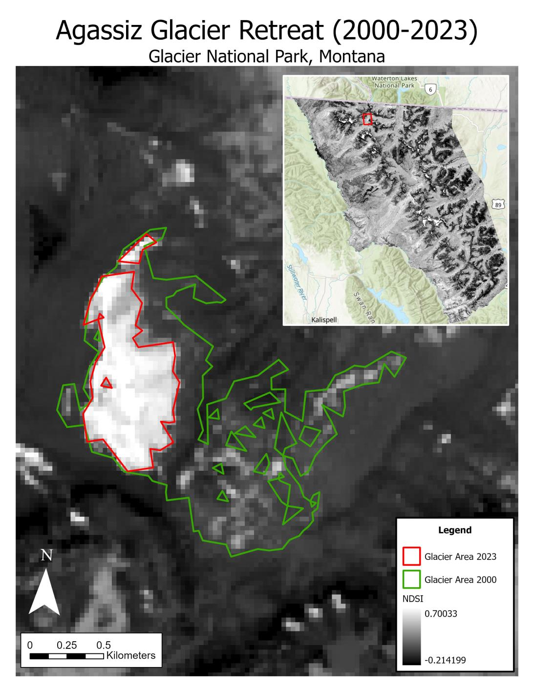
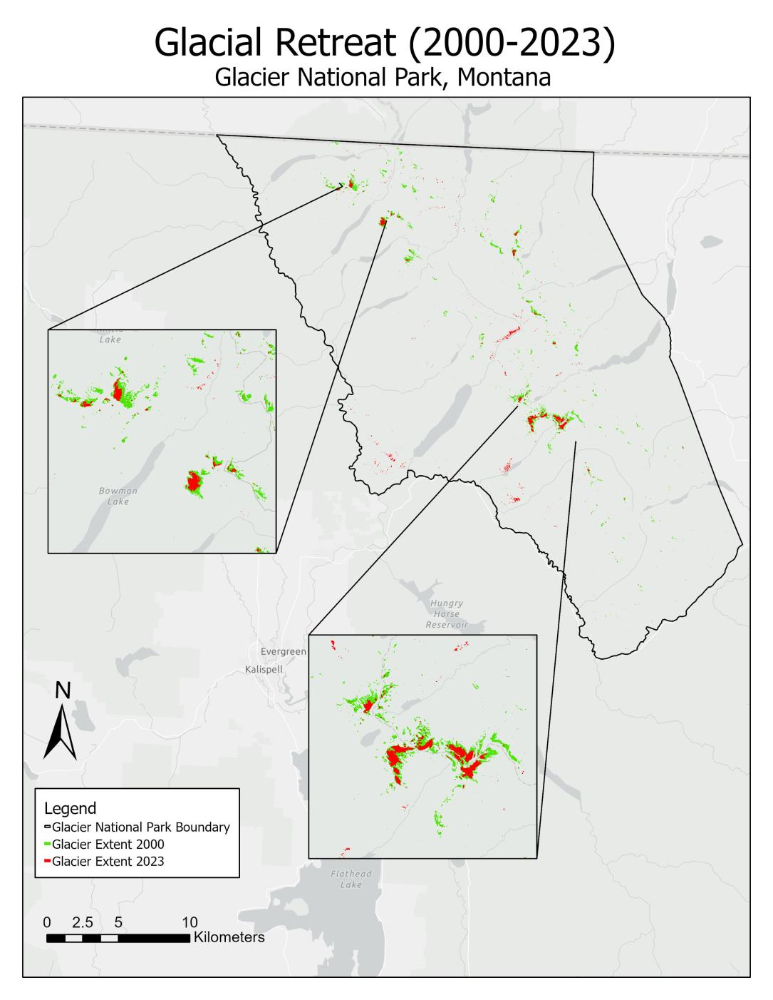

Project overview
Change across a warming landscape.
Glaciers in Glacier National Park have retreated substantially since the Little Ice Age. This project compared glacier extent in 2000 and 2023 using remotely sensed imagery and the Normalized Difference Snow Index (NDSI).
I mapped change across the park and examined Agassiz Glacier more closely to visualize how rapidly ice area has diminished over the past two decades.
Mapped change
From one glacier to the whole park.


Key findings
A shrinking cryosphere.
Park-wide lossGlaciers across Glacier National Park show widespread retreat between 2000 and 2023.
Agassiz GlacierAgassiz Glacier has lost roughly three-quarters of its former area, making it especially vulnerable to continued warming.
Climate connectionThe analysis found that warmer annual temperatures corresponded with greater glacier melt over the study period.